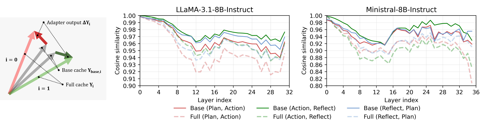
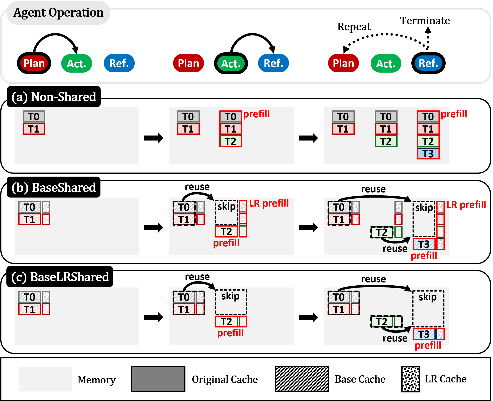
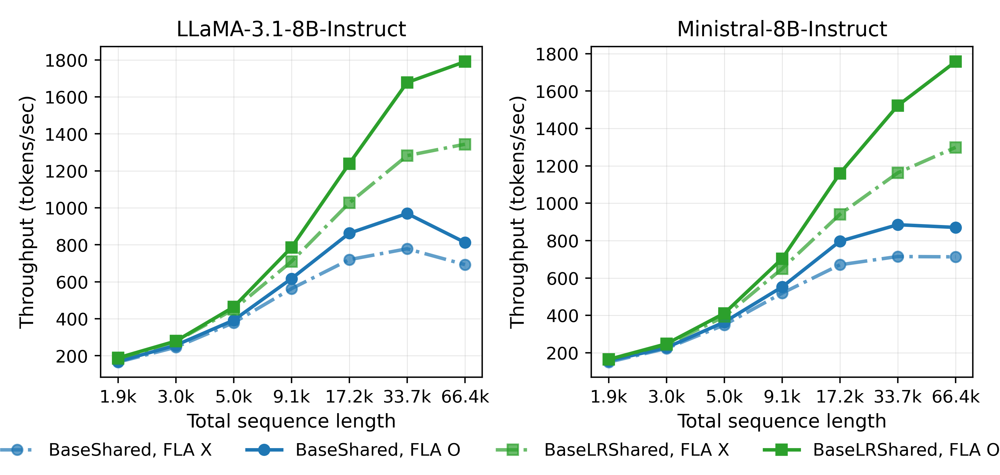
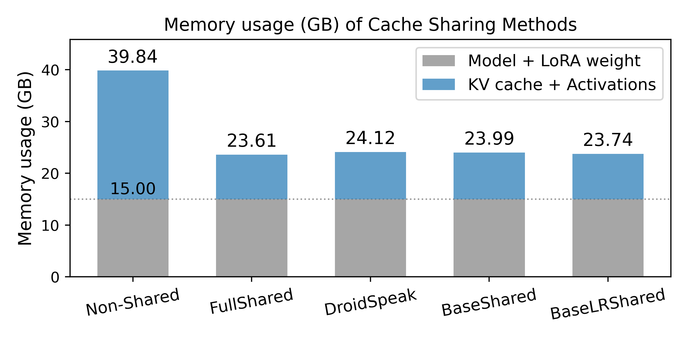

Overview — the logical flow개요 — 전체 논리 흐름
Figures from the paper논문 원본 그림




Comprehensive walkthrough전체 내용 정리
1. The setting: where the overhead comes from1. 배경: 오버헤드는 어디서 오나
Modern LLM-agent systems assign specialized roles to several agents that pass a growing, tool-augmented context (a "trajectory") between them. A scalable way to specialize is multi-LoRA: all agents share one frozen pretrained backbone W₀ and differ only by a small low-rank adapter ΔWᵢ = BᵢAᵢ. The problem the paper attacks is that, despite that shared backbone, every agent independently prefills and stores its own KV cache for the same overlapping context. With N agents and trajectory length L, that is N redundant prefills and N copies of a cache that is mostly identical — memory and latency both scale with N.
현대 LLM-에이전트 시스템은 여러 에이전트에 특화 역할을 주고, 점점 커지는 도구 증강 맥락("궤적")을 주고받는다. 확장 가능한 특화 방법이 멀티-LoRA다: 모든 에이전트가 고정 사전학습 백본 W₀를 공유하고 작은 저랭크 어댑터 ΔWᵢ = BᵢAᵢ로만 갈린다. 논문이 겨냥하는 문제는, 그 공유 백본에도 불구하고 각 에이전트가 같은 겹치는 맥락에 대해 독립적으로 프리필하고 자기 KV 캐시를 저장한다는 점이다. 에이전트 N개, 궤적 길이 L이면 N번의 중복 프리필과, 거의 동일한 캐시의 N개 복사본 — 메모리와 지연이 모두 N에 비례한다.
2. The observation that drives everything2. 모든 것을 이끄는 관찰
The value projection output for agent i is Yᵢ = Xᵢ·W₀ + Xᵢ·ΔWᵢ = Y_base,i + ΔYᵢ. Measuring layer-wise cosine similarity across agent pairs on the same 2k-token HotpotQA contexts, the authors find the base term is nearly agent-invariant (average 0.9726 on LLaMA-3.1-8B, 0.9530 on Ministral-8B) while the adapter term is almost orthogonal across agents (0.0538 and 0.0225). The key cache is even more similar (>0.98 average), which is why they argue the value cache is what needs careful handling, not the key. An appendix gives a bound showing the full cache's cross-agent similarity is provably lower than the base cache's under these conditions — i.e. naive full sharing must lose the agent-specific signal, explaining FullShared's accuracy hit.
에이전트 i의 값 프로젝션 출력은 Yᵢ = Xᵢ·W₀ + Xᵢ·ΔWᵢ = Y_base,i + ΔYᵢ다. 같은 HotpotQA 2k 토큰 맥락에서 에이전트 쌍별 층별 코사인 유사도를 재보면, 베이스 항은 거의 에이전트 불변(LLaMA-3.1-8B 평균 0.9726, Ministral-8B 0.9530)인 반면 어댑터 항은 에이전트 간 거의 직교(0.0538, 0.0225)다. 키 캐시는 더 유사(평균 >0.98)해, 세심히 다뤄야 하는 건 키가 아니라 값 캐시라고 주장한다. 부록은 이 조건에서 전체 캐시의 에이전트 간 유사도가 베이스 캐시보다 증명적으로 낮음을 보이는 상계를 제시한다 — 즉 순진한 완전 공유는 에이전트 고유 신호를 반드시 잃으며, 이는 FullShared의 정확도 손실을 설명한다.
3. BaseShared: sharing the base, compressing the adapter3. BaseShared: 베이스 공유, 어댑터 압축
The first scheme decouples the value cache. The first agent to see a context materializes and stores the base cache Y_base; later agents reuse it without recomputing the value projection from W₀. The agent-specific adapter output is not stored at full dimension d_out (that would erase the savings, pushing total size to 1 + 1/N of non-shared). Instead it is stored in its inherent low-rank form as the intermediate LR cache Y_lr,i = Xᵢ·Aᵢ (width r ≪ d_out), and reconstructed on demand at runtime via the up-projection Y_lr,i·Bᵢ. The key cache is shared outright. Net KV memory becomes ≈ 1/N + r/d_out ≈ 1/N of the non-shared scheme.
첫 스킴은 값 캐시를 분해한다. 어떤 맥락을 처음 보는 에이전트가 베이스 캐시 Y_base를 실체화·저장하고, 이후 에이전트들은 W₀로부터 값 프로젝션을 재계산하지 않고 재사용한다. 에이전트별 어댑터 출력은 전차원 d_out으로 저장하지 않는다(그러면 이득이 사라져 총 크기가 비공유의 1 + 1/N이 됨). 대신 본래 저랭크 형태인 중간 LR 캐시 Y_lr,i = Xᵢ·Aᵢ(너비 r ≪ d_out)로 저장하고, 런타임에 업프로젝션 Y_lr,i·Bᵢ로 필요할 때 복원한다. 키 캐시는 통째로 공유. 순 KV 메모리는 비공유의 ≈ 1/N + r/d_out ≈ 1/N이 된다.
4. The compute problem BaseShared leaves open4. BaseShared가 남긴 연산 문제
Memory is solved, but compute is not. Because only the base cache is shared, when a new agent takes over it must build its own LR cache for the entire accumulated context it has not yet processed — the "LR prefill." Computing Xⱼ·Aⱼ requires the hidden states for all those tokens, so the value/key projection for the base can be skipped but the bulk of the forward pass (notably the MLP layers) still runs. Overall complexity therefore stays O(N·L²·d_model), the same order as non-shared — and, the authors note, the same limitation as DroidSpeak's selective recomputation. BaseShared is thus positioned as a memory-efficient drop-in for standard multi-LoRA, not a speedup.
메모리는 해결됐지만 연산은 아니다. 베이스 캐시만 공유되므로, 새 에이전트가 이어받으면 아직 처리 안 한 전체 누적 맥락에 대해 자기 LR 캐시를 만들어야 한다 — "LR 프리필". Xⱼ·Aⱼ 계산엔 그 모든 토큰의 은닉 상태가 필요해, 베이스용 값/키 프로젝션은 건너뛸 수 있어도 순전파의 대부분(특히 MLP 층)은 여전히 돈다. 그래서 전체 복잡도는 O(N·L²·d_model)로 비공유와 같은 차수 — 저자들 말대로 DroidSpeak의 선택적 재계산과 같은 한계다. 따라서 BaseShared는 속도 향상이 아니라 표준 멀티-LoRA용 메모리 효율 드롭인으로 자리매김된다.
5. BaseLRShared: shared-A unlocks compute savings5. BaseLRShared: shared-A가 연산 절감을 연다
The second scheme leans on "shared-A" multi-LoRA — recent findings that task-specific behavior is driven mostly by the up-projection Bᵢ while the down-projection A can be shared across roles (and even improves accuracy). If A is shared, the LR cache X·A no longer depends on the agent, so it too is highly similar across agents (Table 2: 0.947–0.963). LRAgent then keeps a single base cache and a single LR cache for the whole system and forms each agent's output with its own Bᵢ. Now both caches are already available for every previously seen token, so a switching agent computes activations only for newly appended context — the N separate prefills collapse to one, and complexity drops to ≈ O(L²·d_model), comparable to full sharing.
둘째 스킴은 "shared-A" 멀티-LoRA에 기댄다 — 태스크 특화 행동은 주로 업프로젝션 Bᵢ가 이끌고 다운프로젝션 A는 역할 간 공유 가능(정확도도 향상)하다는 최근 발견이다. A를 공유하면 LR 캐시 X·A가 더 이상 에이전트에 의존하지 않아 에이전트 간 매우 유사(Table 2: 0.947–0.963)해진다. 그러면 LRAgent는 시스템 전체에 베이스 캐시 1개와 LR 캐시 1개만 두고 각 에이전트 출력을 자기 Bᵢ로 만든다. 이제 두 캐시가 이미 본 모든 토큰에 대해 준비돼 있으므로, 넘겨받는 에이전트는 새로 추가된 맥락에 대해서만 활성화를 계산 — N번의 개별 프리필이 1번으로 붕괴하고 복잡도가 ≈ O(L²·d_model)로 완전 공유급이 된다.
6. Flash-LoRA-Attention: making the reconstruction cheap6. Flash-LoRA-Attention: 복원을 싸게
Reconstructing the adapter contribution naively means forming V_lr·B ∈ ℝ^{L×d_out} for all L tokens before attention: O = P·(V_base + V_lr·B), which scales with both L and d_out and would eat the sharing benefit. LRAgent exploits associativity: O = P·V_base + (P·V_lr)·B. The attention-weighted product P·V_lr is done in the low-rank space (Θ(L·r)) and the up-projection B is applied once afterward (Θ(r·d_out)) — a total of Θ(L·r + r·d_out) instead of Θ(L·r·d_out), an ≈ r/d_out reduction on the dominant length-L term. Algorithm 1 folds this into FlashAttention by carrying an extra low-rank accumulator O_lr,i = Σ P·V_lr,j alongside the usual online-softmax state, up-projecting by B only once per query block. On its own, this kernel is worth up to 1.24×/1.35× throughput (Figure 4).
어댑터 기여를 순진하게 복원하면 어텐션 전에 모든 L 토큰에 대해 V_lr·B ∈ ℝ^{L×d_out}를 만들어야 한다: O = P·(V_base + V_lr·B), 이는 L과 d_out 양쪽에 비례해 공유 이득을 갉아먹는다. LRAgent는 결합법칙을 이용한다: O = P·V_base + (P·V_lr)·B. 어텐션 가중 곱 P·V_lr을 저랭크 공간(Θ(L·r))에서 하고 업프로젝션 B를 뒤에 한 번(Θ(r·d_out)) 적용 — Θ(L·r·d_out) 대신 Θ(L·r + r·d_out)로, 지배적인 길이-L 항에서 ≈ r/d_out 감소. Algorithm 1은 이를 FlashAttention에 통합해, 온라인 소프트맥스 상태와 함께 추가 저랭크 누산기 O_lr,i = Σ P·V_lr,j를 들고 다니다 쿼리 블록당 한 번만 B로 업프로젝션한다. 이 커널만으로 최대 1.24×/1.35× 처리량 가치가 있다(Figure 4).
7. Experimental setup7. 실험 설정
Agents follow AutoAct: three fine-tuned roles — plan (reason + choose tool), action (build API args + call web search / Wikipedia), reflect (decide to answer or continue). Models are LLaMA-3.1-8B-Instruct and Ministral-8B-Instruct, fine-tuned on 2.5k HotpotQA and 2.0k ScienceQA trajectories (AutoAct's synthetic, filtered data). LoRA rank r = 8 on query and value projections, shared-A. Baselines: Non-Shared (upper-bound accuracy), FullShared (share the entire KV cache), and DroidSpeak (recompute the top-33% most sensitive layers, ~11–12 layers). Notably, prefix-matching methods (KVLink/KVFlow/KVComm) reduce to FullShared here because all agents share an identical prefix. Efficiency is measured on a controlled synthetic trace (retrieved context varied 0.25k→16k, total 1.9k→66.4k tokens) to isolate cache efficiency from accuracy-driven trajectory length. Single A6000 48GB.
에이전트는 AutoAct를 따른다: 미세조정된 세 역할 — plan(추론 + 도구 선택), action(API 인자 생성 + 웹 검색/위키 호출), reflect(답할지 계속할지 결정). 모델은 LLaMA-3.1-8B-Instruct와 Ministral-8B-Instruct, HotpotQA 2.5k·ScienceQA 2.0k 궤적(AutoAct의 합성·필터링 데이터)으로 미세조정. LoRA 랭크 r = 8을 query·value에, shared-A. 기준선: Non-Shared(정확도 상한), FullShared(전체 KV 캐시 공유), DroidSpeak(상위 33% 민감 층 재계산, ~11–12층). 특히 프리픽스 매칭 기법(KVLink/KVFlow/KVComm)은 모든 에이전트가 동일 프리픽스를 공유하므로 여기선 FullShared로 환원된다. 효율은 정확도에 따른 궤적 길이를 분리하기 위해 통제된 합성 트레이스(검색 맥락 0.25k→16k, 총 1.9k→66.4k 토큰)로 측정. 단일 A6000 48GB.
8. Accuracy: decomposition preserves the agent8. 정확도: 분해가 에이전트를 보존
Across both models and both datasets, BaseShared tracks the non-shared baseline within an average of 0.7% (e.g. LLaMA HotpotQA 38.60 vs 38.88; ScienceQA 69.24 vs 69.31). BaseLRShared drops a bit more (≤ 1.5%: LLaMA HotpotQA 37.92, Ministral ScienceQA 67.32). In contrast, FullShared falls up to 5.3% (Ministral ScienceQA 63.47 vs 68.75) and DroidSpeak up to 2.6%. The out-of-function (no-answer) rate follows the same ranking, and rank ablations confirm r = 8 is a plateau. This is the paper's cleanest result: keeping the small adapter term — rather than discarding it (FullShared) or recomputing whole layers (DroidSpeak) — is what protects role-specific behavior.
두 모델·두 데이터셋 전반에서 BaseShared는 비공유 기준선을 평균 0.7% 이내로 따라간다(예: LLaMA HotpotQA 38.60 vs 38.88; ScienceQA 69.24 vs 69.31). BaseLRShared는 조금 더 떨어진다(≤ 1.5%: LLaMA HotpotQA 37.92, Ministral ScienceQA 67.32). 반면 FullShared는 최대 5.3%(Ministral ScienceQA 63.47 vs 68.75), DroidSpeak는 최대 2.6% 하락. out-of-function(무응답) 비율도 같은 순위를 따르고, 랭크 제거 실험은 r = 8이 정체 지점임을 확인한다. 이것이 논문에서 가장 깔끔한 결과다: 작은 어댑터 항을 버리거나(FullShared) 층 전체를 재계산하는(DroidSpeak) 대신 유지하는 것이 역할 특화 행동을 지킨다.
9. Efficiency: BaseLRShared ≈ FullShared9. 효율: BaseLRShared ≈ FullShared
On the synthetic trace, BaseLRShared reaches up to 2.46× throughput and 4.44× lower TTFT over non-shared, essentially matching the FullShared upper bound (e.g. LLaMA at 66.4k: 1790.6 vs 1826.5 tok/s; TTFT 23.35 vs 23.28 s), where Non-Shared simply OOMs. BaseShared and DroidSpeak — both of which recompute hidden states for un-processed tokens — plateau lower (up to 1.42× / 1.36× throughput, 1.63× / 1.56× TTFT). KV memory drops ~1/3 versus non-shared and lands within 1 GB of FullShared; LRAgent's LR caches are negligible, while DroidSpeak's hidden-state cache is up to ~2× a single layer's KV under GQA and flirts with OOM.
합성 트레이스에서 BaseLRShared는 비공유 대비 최대 2.46× 처리량과 4.44× 낮은 TTFT에 도달해 FullShared 상한과 사실상 동등하다(예: LLaMA 66.4k에서 1790.6 vs 1826.5 tok/s; TTFT 23.35 vs 23.28 s), 그 지점에서 Non-Shared는 OOM. BaseShared와 DroidSpeak — 둘 다 미처리 토큰의 은닉 상태를 재계산 — 는 더 낮게 정체(최대 1.42×/1.36× 처리량, 1.63×/1.56× TTFT). KV 메모리는 비공유 대비 ~1/3 감소하고 FullShared와 1 GB 이내; LRAgent의 LR 캐시는 무시할 수준인 반면 DroidSpeak의 은닉상태 캐시는 GQA에서 단일 층 KV의 ~2배까지 커져 OOM에 근접한다.
10. The honest caveat the authors bury in the appendix10. 저자가 부록에 묻어둔 정직한 단서
Appendix D.2 reports end-to-end latency on the actual HotpotQA benchmark — and here the story is far more modest. Average model latency for BaseLRShared is 5.12 s vs non-shared 5.51 s (~7%), and E2E latency 11.96 vs 12.28 s (~2.6%). The reason: real trajectories average only ~1,093–1,412 tokens (Table 17), nowhere near the 66.4k synthetic point where the 4.44× headline lives. Worse, lower-accuracy sharers (FullShared) actually take longer end-to-end because their weaker agents re-reason and retrieve more, inflating trajectory length. To their credit, the authors surface this and use it to argue BaseLRShared is "empirically optimal" — but it also means the marquee 2.46×/4.44× numbers describe a context regime this agent workload never actually reaches.
부록 D.2는 실제 HotpotQA 벤치마크의 종단간 지연을 보고하는데, 여기선 이야기가 훨씬 소박하다. BaseLRShared의 평균 모델 지연은 5.12 s vs 비공유 5.51 s(~7%), E2E 지연은 11.96 vs 12.28 s(~2.6%). 이유: 실제 궤적은 평균 ~1,093–1,412 토큰(Table 17)으로, 4.44× 헤드라인이 사는 66.4k 합성 지점 근처도 아니다. 더 나쁜 건, 정확도가 낮은 공유 기법(FullShared)이 오히려 종단간으로 더 오래 걸린다는 것 — 약한 에이전트가 재추론하고 더 많이 검색해 궤적 길이가 늘기 때문이다. 저자들이 이를 드러내 BaseLRShared가 "경험적으로 최적"이라 주장하는 건 칭찬할 만하지만, 동시에 간판 2.46×/4.44× 수치가 이 에이전트 워크로드가 실제로는 결코 닿지 않는 맥락 구간을 설명한다는 뜻이기도 하다.
Key results — accuracy (Table 3)핵심 결과 — 정확도 (Table 3)
| Method | LLaMA HotpotQA | LLaMA ScienceQA | Ministral HotpotQA | Ministral ScienceQA |
|---|---|---|---|---|
| Non-Shared (upper bound) | 38.88 | 69.31 | 35.93 | 68.75 |
| FullShared | 36.40 (−2.5) | 65.22 (−4.1) | 32.78 (−3.2) | 63.47 (−5.3) |
| DroidSpeak | 36.77 (−2.1) | 67.49 (−1.8) | 34.48 (−1.5) | 66.13 (−2.6) |
| BaseShared | 38.60 (−0.3) | 69.24 (−0.1) | 35.85 (−0.1) | 68.08 (−0.7) |
| BaseLRShared | 37.92 (−1.0) | 69.13 (−0.2) | 35.32 (−0.6) | 67.32 (−1.4) |
| Method | Thpt 9.1k | Thpt 33.7k | Thpt 66.4k | TTFT 66.4k |
|---|---|---|---|---|
| Non-Shared | 592.1 | 683.2 | OOM | OOM |
| FullShared | 808.1 | 1697.6 | 1826.5 | 23.28 |
| DroidSpeak | 633.5 | 931.0 | 813.1 | 67.80 |
| BaseShared | 617.3 | 969.6 | 823.2 | 67.80 |
| BaseLRShared | 785.7 | 1678.1 | 1790.6 | 23.35 |
✅ Strengths✅ 강점
A sharp, well-measured core observation날카롭고 잘 측정된 핵심 관찰
The base-vs-adapter decomposition is backed by clean numbers (base cosine ~0.95–0.97, key >0.98, adapter ~0.02–0.05) across two models and three agent pairs, plus a theoretical bound showing full-cache similarity is necessarily below base-cache similarity. It's a genuinely informative "why" that directly explains why FullShared loses accuracy — motivation done right.
베이스-대-어댑터 분해가 두 모델·세 에이전트 쌍의 깔끔한 수치(베이스 코사인 ~0.95–0.97, 키 >0.98, 어댑터 ~0.02–0.05)와, 전체 캐시 유사도가 베이스 캐시 유사도보다 반드시 낮음을 보이는 이론적 상계로 뒷받침된다. FullShared가 왜 정확도를 잃는지 직접 설명하는 진짜 정보성 "이유" — 동기 부여를 제대로 했다.
Flash-LoRA-Attention is a real systems contributionFlash-LoRA-Attention은 진짜 시스템 기여
Reordering to O = P·V_base + (P·V_lr)·B and folding a low-rank accumulator into FlashAttention's online-softmax loop (Algorithm 1) is elegant and correct: it turns adapter reconstruction from an O(L·r·d_out) tax into O(L·r + r·d_out), the difference between LR sharing being viable or not. The ablation (1.24×/1.35× from the kernel alone) isolates its value.
O = P·V_base + (P·V_lr)·B로 재정렬하고 저랭크 누산기를 FlashAttention의 온라인 소프트맥스 루프에 통합(Algorithm 1)한 것은 우아하고 정확하다: 어댑터 복원을 O(L·r·d_out) 세금에서 O(L·r + r·d_out)로 바꿔, LR 공유가 성립하느냐 마느냐를 가른다. 제거 실험(커널만으로 1.24×/1.35×)이 그 가치를 분리한다.
Best-in-class accuracy preservation동급 최고의 정확도 보존
≤0.7% (BaseShared) and ≤1.5% (BaseLRShared) average drop against a non-shared upper bound, versus 5.3% for FullShared and 2.6% for DroidSpeak, on both models and both datasets. The claim "preserves role-specific behavior" is actually supported by the measured gap to alternatives, not asserted.
비공유 상한 대비 평균 하락 ≤0.7%(BaseShared)·≤1.5%(BaseLRShared), FullShared 5.3%·DroidSpeak 2.6% 대비 — 두 모델·두 데이터셋 모두에서. "역할 특화 행동 보존" 주장이 대안과의 측정된 격차로 실제 뒷받침되며 단순 단언이 아니다.
Unusually honest end-to-end reporting드물게 정직한 종단간 보고
Appendix D.2 shows that on the real benchmark the intrinsic speedups shrink and that lower-accuracy sharers can be slower end-to-end because their agents take more steps. Many efficiency papers hide exactly this; surfacing it (and the memory/OOM nuances under GQA) builds credibility even though it undercuts the headline.
부록 D.2는 실제 벤치마크에선 내재적 속도 향상이 줄고, 정확도가 낮은 공유 기법이 에이전트가 더 많은 스텝을 밟아 종단간으로 더 느릴 수 있음을 보인다. 많은 효율 논문이 바로 이걸 숨긴다; 이를(그리고 GQA 하의 메모리/OOM 뉘앙스를) 드러낸 것은 헤드라인을 깎아내리면서도 신뢰를 쌓는다.
Thorough ablation coverage폭넓은 제거 실험
Rank sweep (1→32, plateau at 8), LoRA placement (qv vs qkvo), context-overlap sweep (0→100%), shared-A justification with per-method deltas, mixed-domain training, OOF rates, and a full memory table across 1.9k→132k tokens. The design space is genuinely mapped rather than cherry-picked.
랭크 스윕(1→32, 8에서 정체), LoRA 배치(qv vs qkvo), 맥락 겹침 스윕(0→100%), 방법별 델타를 담은 shared-A 정당화, 혼합 도메인 학습, OOF 비율, 1.9k→132k 토큰 전체 메모리 표까지. 설계 공간을 체리피킹이 아니라 실제로 지도화했다.
⚔️ Weaknesses, gaps & suspicious points⚔️ 약점·부족한 점·의심 포인트
Headline speedups live at 66.4k tokens; real trajectories are ~1k헤드라인 속도는 66.4k 토큰용; 실제 궤적은 ~1k
The 2.46× throughput and 4.44× TTFT are measured on a synthetic trace stretched to 66,400 tokens. But the paper's own Table 17 shows actual HotpotQA trajectories average 1,093–1,412 tokens, and the real end-to-end latency edge of BaseLRShared is only ~2.6% (E2E 11.96 vs 12.28 s). The marquee numbers therefore describe a regime this agent workload never reaches — the honest headline is "matches full-sharing efficiency and would help a lot if your trajectories were huge."
2.46× 처리량과 4.44× TTFT는 66,400 토큰으로 늘린 합성 트레이스에서 측정된다. 그런데 논문 자신의 Table 17은 실제 HotpotQA 궤적이 평균 1,093–1,412 토큰이고, BaseLRShared의 실제 종단간 지연 우위는 ~2.6%(E2E 11.96 vs 12.28 s)뿐임을 보인다. 따라서 간판 수치는 이 워크로드가 결코 닿지 않는 구간을 설명한다 — 정직한 헤드라인은 "완전 공유 효율과 동등하며, 궤적이 거대하다면 크게 도움"이다.
The compute-saving variant needs shared-A — a training constraint, not a drop-in연산 절감 변형은 shared-A 필요 — 드롭인 아님, 학습 제약
BaseLRShared's whole advantage depends on a shared down-projection A, which Appendix C.3 admits "may not be directly applicable" to already-deployed multi-LoRA systems with independent Aᵢ — retrofitting requires retraining. So the paper effectively ships two products: a true drop-in (BaseShared, memory only) and a train-time architecture choice (BaseLRShared, compute+memory). The framing of shared-A as "an opportunity, not a limitation" is spin around a real coupling.
BaseLRShared의 모든 이점이 공유 다운프로젝션 A에 의존하는데, 부록 C.3은 이것이 독립 Aᵢ로 이미 배포된 멀티-LoRA 시스템엔 "직접 적용 불가할 수 있다"고 인정한다 — 개조하려면 재학습이 필요하다. 즉 논문은 사실상 두 제품을 낸다: 진짜 드롭인(BaseShared, 메모리만)과 학습 시점 아키텍처 선택(BaseLRShared, 연산+메모리). shared-A를 "한계가 아닌 기회"로 프레이밍한 것은 실제 결합을 둘러싼 스핀이다.
Base sharing is an approximation whose compounding error is never analyzed베이스 공유는 근사이며 누적 오차가 분석되지 않음
The base cache is shared "even though the layer inputs Xᵢ are not exactly identical." Cosine 0.95–0.97 is high but not 1.0, and because a shared (approximate) cache at layer ℓ feeds layer ℓ+1, the mismatch can compound across 32–36 layers — deeper layers' inputs drift precisely because earlier layers used shared caches. The similarity is measured on matched inputs, not under this feedback. The end accuracy drop bounds the total damage, but the mechanism (and whether it worsens on longer trajectories or larger adapters) is unmeasured.
베이스 캐시는 "층 입력 Xᵢ가 정확히 같지 않은데도" 공유된다. 코사인 0.95–0.97은 높지만 1.0이 아니며, 층 ℓ의 공유(근사) 캐시가 층 ℓ+1로 들어가므로 32–36개 층에 걸쳐 불일치가 누적될 수 있다 — 깊은 층의 입력은 앞 층이 공유 캐시를 썼기 때문에 표류한다. 유사도는 이 피드백이 아니라 정합 입력에서 측정됐다. 최종 정확도 하락이 총 손상을 상한하지만, 그 메커니즘(그리고 더 긴 궤적이나 큰 어댑터에서 악화되는지)은 미측정이다.
Only N=3 agents — yet the whole memory pitch is "1/N"에이전트 N=3뿐 — 그런데 메모리 셀링포인트는 "1/N"
The memory/compute claims are 1/N and O(L²d), most compelling as N grows, but every experiment uses exactly three agents, so the reported "~1/3 memory" is just N=3 and the 1/N scaling is never demonstrated. No sweep over agent count, no 5/10/20-agent system where redundancy — and thus the payoff — would be largest. For a scalability paper, not scaling the very axis the theory is about is a conspicuous omission.
메모리/연산 주장은 1/N과 O(L²d)로 N이 커질수록 설득력이 크지만, 모든 실험이 정확히 3 에이전트를 쓴다. 그래서 보고된 "~1/3 메모리"는 그냥 N=3이고 1/N 스케일링은 전혀 입증되지 않는다. 에이전트 수 스윕도, 중복(따라서 이득)이 가장 클 5/10/20-에이전트 시스템도 없다. 확장성 논문이 정작 이론이 다루는 축을 확장하지 않은 것은 눈에 띄는 누락이다.
Single seed; deviations come only from tool nondeterminism단일 시드; 편차는 도구 비결정성만
Appendix D.5 states all runs use one seed (42); the reported std devs (0.16–0.45) arise only from "subtle non-determinism in external tool usage," not decoding or initialization. Some BaseLRShared drops exceed those deviations by several × (LLaMA HotpotQA-Hard 31.90→30.55, −1.35, vs std ~0.16), so "preserves accuracy" is cleaner for BaseShared than BaseLRShared, and no multi-seed variance backs the tighter comparisons.
부록 D.5는 모든 실행이 시드 하나(42)를 쓴다고 밝힌다; 보고된 표준편차(0.16–0.45)는 디코딩·초기화가 아니라 "외부 도구 사용의 미묘한 비결정성"에서만 나온다. 일부 BaseLRShared 하락은 그 편차를 수 배 초과한다(LLaMA HotpotQA-Hard 31.90→30.55, −1.35, std ~0.16 대비). 따라서 "정확도 보존"은 BaseLRShared보다 BaseShared에서 더 깨끗하고, 더 촘촘한 비교를 뒷받침할 다중 시드 분산이 없다.
DroidSpeak baseline may be hobbled by a fixed, HotpotQA-probed configDroidSpeak 기준선이 HotpotQA로 고정 탐침된 설정에 발목 잡혔을 수 있음
DroidSpeak's recompute set (top-33% layers) is probed only on HotpotQA and reused everywhere, and its hidden-state cache is described as flirting with OOM under GQA — with the OOM attributed to "memory fragmentation." If the baseline's layer selection is suboptimal on ScienceQA / Ministral, its accuracy and memory both look worse than a well-tuned DroidSpeak would, inflating LRAgent's relative margin. No sensitivity analysis on that 33% choice is given.
DroidSpeak의 재계산 집합(상위 33% 층)은 HotpotQA에서만 탐침돼 모든 곳에 재사용되고, 그 은닉상태 캐시는 GQA에서 OOM에 근접한다고 서술된다 — OOM은 "메모리 단편화" 탓으로 돌린다. 기준선의 층 선택이 ScienceQA/Ministral에서 최적이 아니라면 정확도·메모리 모두 잘 튜닝된 DroidSpeak보다 나빠 보여 LRAgent의 상대 마진이 부풀려진다. 그 33% 선택에 대한 민감도 분석이 없다.
Flash-LoRA-Attention only works cleanly for the value cacheFlash-LoRA-Attention은 값 캐시에만 깔끔히 작동
The associativity trick fails for the key cache because RoPE applies a position-dependent rotation on the head dimension, blocking the Q(BᵀK'ᵀ_lr) → (QBᵀ)K'ᵀ_lr reorder (Appendix D.1). So the qkvo configuration is slower, and the paper's preference for qv is partly self-serving — the method's efficiency is coupled to a specific LoRA placement rather than being adapter-general. Any deployment needing key-side adaptation loses the kernel's advantage.
결합법칙 트릭은 키 캐시에선 실패한다. RoPE가 헤드 차원에 위치 의존 회전을 적용해 Q(BᵀK'ᵀ_lr) → (QBᵀ)K'ᵀ_lr 재정렬을 막기 때문이다(부록 D.1). 그래서 qkvo 설정이 더 느리고, 논문의 qv 선호는 부분적으로 자기편의적이다 — 방법의 효율이 어댑터 일반이 아니라 특정 LoRA 배치에 결합돼 있다. 키 측 적응이 필요한 배포는 커널 이점을 잃는다.
On the weaker model, even LRAgent noticeably raises no-answer failures약한 모델에선 LRAgent조차 무응답 실패를 눈에 띄게 늘림
For Ministral-8B, every sharing method inflates the out-of-function (no-answer) rate, and LRAgent is no exception: BaseLRShared +1.25 (HotpotQA) and +1.83 (ScienceQA) over non-shared, BaseShared +2.48 (HotpotQA). "No answer" is arguably a worse user experience than a wrong answer, so the accuracy-preservation story is real but model-dependent — it holds tightly on LLaMA and loosens on the weaker backbone, which the abstract's blanket "preserves accuracy" does not convey.
Ministral-8B에선 모든 공유 기법이 out-of-function(무응답) 비율을 높이고 LRAgent도 예외가 아니다: BaseLRShared는 비공유 대비 +1.25(HotpotQA)·+1.83(ScienceQA), BaseShared는 +2.48(HotpotQA). "무응답"은 오답보다 나쁜 사용자 경험일 수 있어, 정확도 보존 이야기는 실재하지만 모델 의존적이다 — LLaMA에선 촘촘히 성립하나 약한 백본에선 느슨해지며, 초록의 포괄적 "정확도 보존"은 이를 전하지 못한다.
Narrow evaluation: two 8B models, two QA datasets, one GPU좁은 평가: 8B 두 모델, QA 두 데이터셋, GPU 하나
All results are 8B-scale, QA-only (HotpotQA + ScienceQA — the latter chosen partly for "limited availability of open-source agent trajectories"), on a single A6000, within the AutoAct framework. No code/math/long-horizon tool tasks, no other agent frameworks, no larger models where the KV/backbone ratio shifts. Generality claims ("across LoRA configurations," "scalable") rest on a fairly thin slice of the agent-workload space.
모든 결과가 8B 규모, QA 전용(HotpotQA+ScienceQA — 후자는 부분적으로 "오픈소스 에이전트 궤적의 제한된 가용성" 때문 선택), 단일 A6000, AutoAct 프레임워크 안이다. 코드/수학/장기 도구 과제도, 다른 에이전트 프레임워크도, KV/백본 비율이 달라지는 더 큰 모델도 없다. 일반성 주장("LoRA 구성 전반", "확장 가능")은 에이전트 워크로드 공간의 꽤 얇은 조각에 기댄다.